The corresponding files can be obtained from:
- Jupyter Notebook:
cohesive_zone_crack.ipynb - Python script:
cohesive_zone_crack.py
Cohesive zone modelling of crack propagation¶
In [153]:
from dolfin import *
from mshr import *
import numpy as np
%matplotlib inline
import matplotlib.pyplot as plt
domain = Rectangle(Point(0, 0), Point(60, 30)) - Circle(Point(20, 10), 5, 40) - Circle(Point(40, 20), 5, 40)
mesh = generate_mesh(domain, 50)
plot(mesh)
facets = MeshFunction("size_t", mesh, 1)
facets.set_all(0)
class Left(SubDomain):
def inside(self, x, on_boundary):
return near(x[0], 0)
class Right(SubDomain):
def inside(self, x, on_boundary):
return near(x[0], 60)
Left().mark(facets, 1)
Right().mark(facets, 2)
dS = Measure("dS", domain=mesh, subdomain_data=facets, metadata={"quadrature_degree": 3})
ds = Measure("ds", domain=mesh, subdomain_data=facets, metadata={"quadrature_degree": 3})
dx = Measure("dx", domain=mesh, metadata={"quadrature_degree": 3})
n = FacetNormal(mesh)
t = as_vector([-n[1], n[0]])

In [154]:
V_u = VectorFunctionSpace(mesh, "DG", 1)
V_cont = VectorFunctionSpace(mesh, "CG", 1)
V_d = FunctionSpace(mesh, "CR", 1)
In [155]:
E = 3.09e3
nu = 0.35
lmbda = Constant(E*nu/(1+nu)/(1-2*nu))
mu = Constant(E/2/(1+nu))
def eps(v):
return sym(grad(v))
def sigma(v):
return lmbda*tr(eps(v))*Identity(2) + 2*mu*eps(v)
In [174]:
sig_max = 75.
tau_max = 75.
GcI = 0.3
GcII = 0.3
kappa = GcII/GcI
beta = 1.
delta_0n = GcI/sig_max/exp(1)
delta_0t = GcII/tau_max/sqrt(exp(1)/2.)
# compression penalty
K = 1e10
ppos = lambda x: (x+abs(x))/2.
def effective_opening(v, n):
#A = outer(n, n) + beta**2/kappa*(Identity(2)-outer(n,n))
#return sqrt(dot(v, dot(A, v)))
return sqrt(dot(v, v))
def That(v, n):
vn = dot(v,n)*n
vt = v-vn
return beta**2/kappa*vt + vn
def T(v, w_max, n):
w = effective_opening(v, n)
#return GcI/delta_0n**2*exp(-w_max/delta_0n)*That(v, n)
return GcI/delta_0n**2*exp(-w_max/delta_0n)*v
def damage(w_max):
d = w_max/delta_0n
return 1-(1+d+d**2/2.)*exp(-d)
In [202]:
u = Function(V_u, name="Displacement")
u_, du = TestFunction(V_u), TrialFunction(V_u)
d = Function(V_d, name="Damage")
w_max = Function(V_d, name="Maximum opening")
DU = Expression(("t", "0"), t=0, degree=0)
bc = [DirichletBC(V_u, Constant((0., 0.)), Left(), method="geometric"),
DirichletBC(V_u, DU, Right(), method="geometric")]
gamma = 10*(3*lmbda+2*mu)
h = CellVolume(mesh)
ih = 2/(h("+")+h("-"))
ih = 1/FacetArea(mesh)
bulk_energy = 0.5*inner(sigma(u), eps(u))*dx
interfacial_energy = 0.5*inner(T(jump(u), avg(w_max), n("+")), jump(u))*dS - \
inner(T(u, w_max, n("+")), u)*ds(1) - \
inner(T(DU-u, w_max, n("+")), DU-u)*ds(2) #- \
#inner(T(jump(u), avg(w_max), n("+")) - avg(dot(sigma(u),n)), jump(u))*dS + \
#inner(T(u, w_max, n("+")) - dot(sigma(u),n), u)*ds(1) + \
#inner(T(DU-u, w_max, n("+")) - dot(sigma(u),n), DU-u)*ds(2)
stabilization = gamma*ih("+")*dot(jump(u), jump(u))*dS #+ ih*gamma*dot(u, u)*ds(1) + ih*gamma*dot(u-DU, u-DU)*ds(2)
total_energy = bulk_energy + interfacial_energy #+ stabilization
D_total_energy = derivative(total_energy, u, u_)
F = replace(D_total_energy, {u: du})
D2_total_energy = derivative(D_total_energy, u, du)
assemble(D_total_energy)
Out[202]:
<dolfin.cpp.la.Vector; proxy of <Swig Object of type 'std::shared_ptr< dolfin::Vector > *' at 0x7f588f0be330> >
In [205]:
w_max = Function(V_d)
w_max.interpolate(Expression("fabs(x[0]-30) <= 1 ? d : 0", d=delta_0n, degree=1))
#p = plot(project(GcI/delta_0n**2*exp(-w_max/delta_0n), FunctionSpace(mesh, "DG", 0)))
#plt.colorbar(p)
solve(lhs(F) == rhs(F), u, bc)
plot(u[0])
--- Instant: compiling ---
Out[205]:
<matplotlib.tri.tricontour.TriContourSet at 0x7f588a997390>
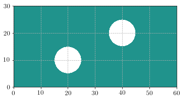
In [191]:
def facet_project(v, V):
v_, dv = TestFunction(V), TrialFunction(V)
a_form = inner(avg(v_), avg(dv))*dS #+ inner(v_, dv)*ds(1)
L_form = inner(avg(v_), v)*dS #+ inner(v_, v_bd)*ds(1)
u = Function(V)
A = assemble(a_form, keep_diagonal=True)
A.ident_zeros() # Regularize the matrix
b = assemble(L_form)
solve(A, u.vector(), b)
return u
problem = NonlinearVariationalProblem(D_total_energy, u, bc, D2_total_energy)
solver = NonlinearVariationalSolver(problem)
prm = solver.parameters
prm['newton_solver']['absolute_tolerance'] = 1E-4
prm['newton_solver']['relative_tolerance'] = 1E-6
prm['newton_solver']['maximum_iterations'] = 25
w_max = Function(V_d)
Nincr = 20
Force = np.zeros((Nincr+1,))
loading = np.linspace(0, 5., Nincr+1)
for (i, t) in enumerate(loading[1:]):
DU.t = t
#solve(lhs(F) == rhs(F), u, bc)
solver.solve()
#solve(D2_total_energy == rhs(F), u, bc, J=D2_total_energy)
w_max.assign(facet_project(sqrt(dot(jump(u), jump(u))), V_d))
d.assign(facet_project(damage(avg(w_max)), V_d))
print np.mean(d.vector().get_local())
print w_max.vector().norm("l2")
Force[i+1] = assemble(sigma(u)[0,0]*ds(2))
p = plot(d)
plt.colorbar(p)
plt.show()
plt.plot(loading, Force)
plt.show()
Calling FFC just-in-time (JIT) compiler, this may take some time.
1.3195907205498413e-06
0.00233082911417
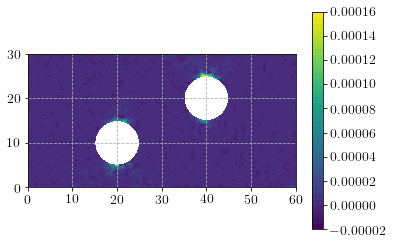
1.022675825638074e-05
0.00465877015097
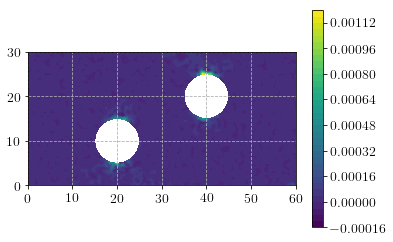
3.357114987097635e-05
0.00698823501118
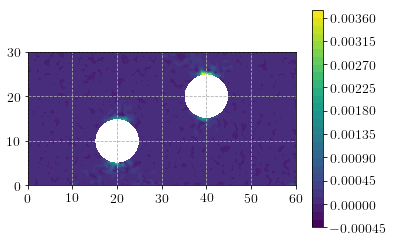
7.733587984695249e-05
0.00931754030195
0.00014746064085835057
0.0116601659365
0.00024724374190114806
0.0139764700224
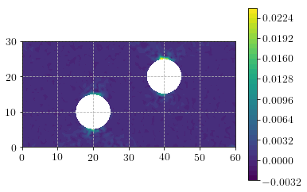
0.00038262850736624725
0.016305385396
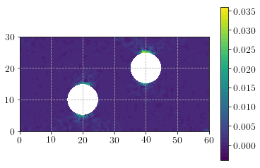
0.0005552091763995347
0.0186466329133
0.0007712545273155069
0.0209713916367
0.0010294470566391872
0.0232976044461
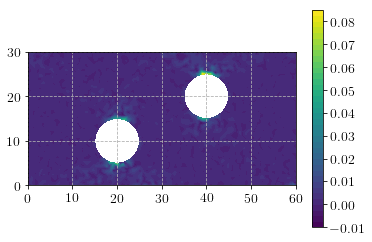
0.0013342551467160624
0.0256248753411
0.0016836634166018313
0.0279529400447
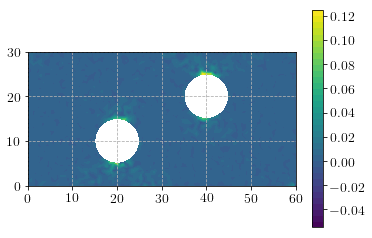
0.0020958685597487745
0.0302816154723
0.0025518803596576134
0.0326107707921
0.0030611804119767562
0.0349403100339
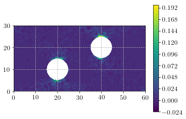
0.0036330316307105247
0.0372701612078
0.004251887379701253
0.0396002692569
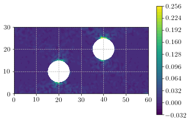
0.004926634877869133
0.041930591357
0.005657796217323516
0.0442686898544
0.0064457478960519435
0.0465952088922
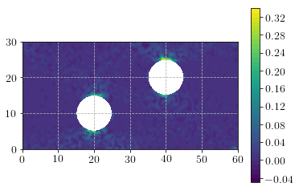
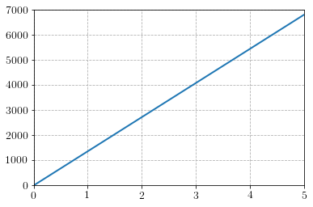
In [142]:
delta_0n
Out[142]:
0.0014715177646857694
In [9]:
---------------------------------------------------------------------------
TypeError Traceback (most recent call last)
<ipython-input-9-78bbf88282cd> in <module>()
1 W0e = FiniteElement("Quadrature", mesh.ufl_cell(), degree=1, quad_scheme='default')
----> 2 W0 = FunctionSpace(mesh, W0e, restriction="facet")
/usr/lib/python2.7/dist-packages/dolfin/functions/functionspace.pyc in __init__(self, *args, **kwargs)
195 + str(args[0]))
196 elif len(args) == 2:
--> 197 self._init_from_ufl(*args, **kwargs)
198 else:
199 self._init_convenience(*args, **kwargs)
TypeError: _init_from_ufl() got an unexpected keyword argument 'restriction'
In [ ]:
GcI/delta_0n**2